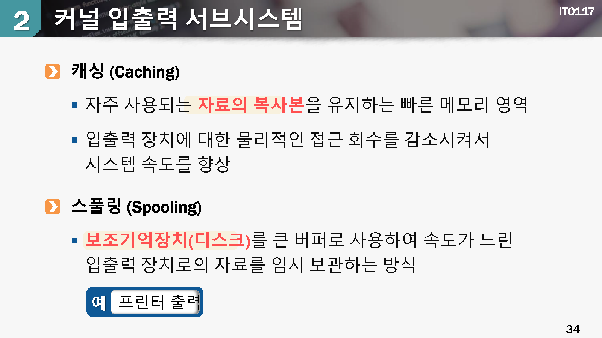
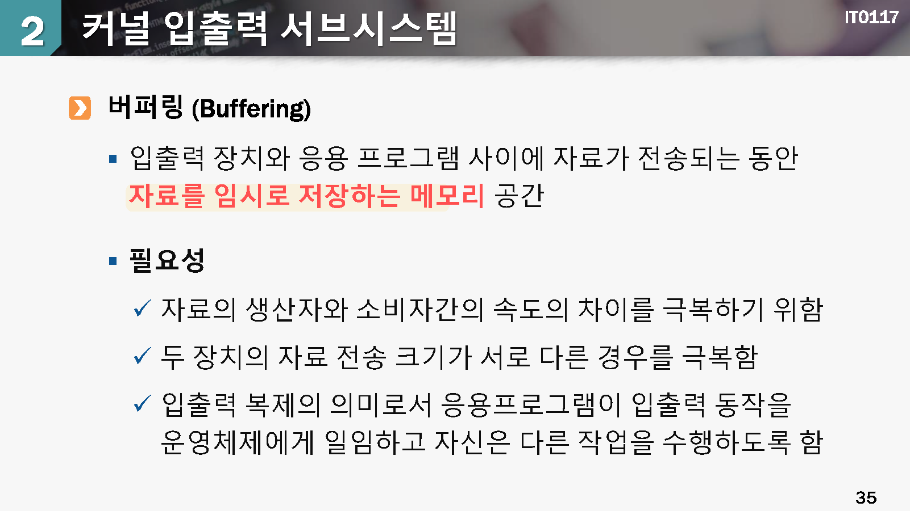

입출력 시스템의 구조
1. 입출력 인터페이스

aaa
aaa

aaa
aaa
aaa
2.커널 입추력 서브 시스템
aaa

aaa

aaa
3.입출력 효율의 향상
입출력 효울이 중요한 이유
실제 동작하는 프로그램은 대부분 입추력 중심이 많음
CPU 성능은 상단히 빠르지만 입출력 장치의 속도는 대부분 느림
CPU 연산 코드를 최적화하여 성능을 포이는 것보다, 입출력 효율을 높이면 더욱 좋은 효과를 얻을 수 있음
입출력 효율을 향상시키는 원칙
- 문맥교환의 빈도를 줄임
- 메모리에서 장치와 응용 프로그램 사이에
자료가 복사되는 횟수를 줄임 인터럽트와 폴링방식을 지혜롭게 사용하는 방법을 고려함- DMA 방식을 활용하여
CPU연산과 입출력 동작이 병행될 수 있음 - 원시 처리 연산을 하드웨어로 구현하여 장치 제어기 내에서 이루어지도록 함
- CPU, 메모리, 버스, 입출력등에 대한 부하가 규인하게 되도록 함